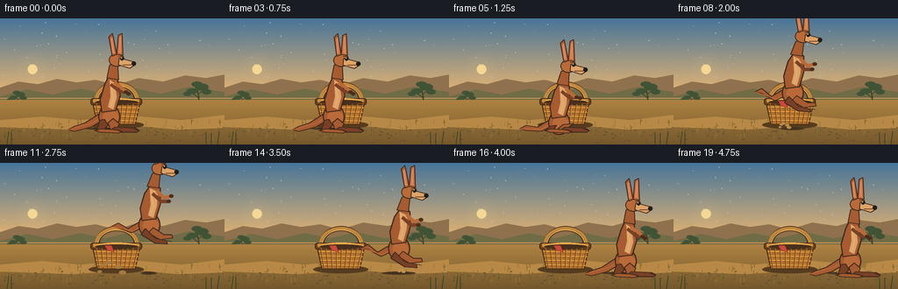
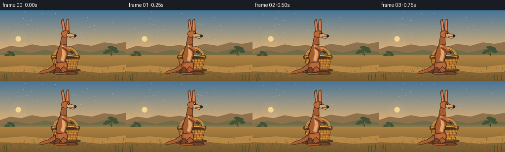

CODING AGENTS AS PIXEL WORLD MODELS
traex/GPT-5.6-Sol · dynamic_spatial_relationship_0033
点击播放 · 原生 RGB 像素
逐轮保存的候选
回放视频、检查图与代码变化。
每份候选均可单独播放。实际图片检查记录在下方工具轨迹中。
候选 01播放与检查图
点击播放 · 原生 RGB 像素


展开代码变化
--- 上一保存版本
+++ 本次保存版本
@@ -0,0 +1,280 @@
+from pathlib import Path
+import math
+import numpy as np
+from PIL import Image, ImageDraw, ImageFilter
+import artifact_io
+
+# Deterministic, fully programmatic vector animation.
+W, H, N = 256, 144, 20
+S = 4
+rng = np.random.default_rng(33)
+
+
+def P(v):
+ return int(round(v * S))
+
+def box(b):
+ return tuple(P(v) for v in b)
+
+def pts(seq):
+ return [(P(x), P(y)) for x, y in seq]
+
+def ellipse(d, b, fill, outline=None, width=1):
+ d.ellipse(box(b), fill=fill, outline=outline, width=P(width) if outline else 1)
+
+def polygon(d, p, fill, outline=None, width=1):
+ d.polygon(pts(p), fill=fill)
+ if outline:
+ d.line(pts(list(p)+[p[0]]), fill=outline, width=P(width), joint='curve')
+
+def line(d, p, fill, width=1, joint='curve'):
+ d.line(pts(p), fill=fill, width=P(width), joint=joint)
+
+def rr(d, b, r, fill, outline=None, width=1):
+ d.rounded_rectangle(box(b), radius=P(r), fill=fill, outline=outline,
+ width=P(width) if outline else 1)
+
+def arc(d, b, start, end, fill, width=1):
+ d.arc(box(b), start=start, end=end, fill=fill, width=P(width))
+
+# Fixed fine-grain texture positions, avoiding frame-to-frame shimmer.
+stars = [(float(rng.uniform(0, W)), float(rng.uniform(4, 69)), float(rng.uniform(.25, .65))) for _ in range(55)]
+grass = [(float(rng.uniform(0, W)), float(rng.uniform(119, 141)), float(rng.uniform(2, 8)),
+ tuple(int(v) for v in rng.choice([[111,91,45],[129,102,49],[93,86,43],[154,119,54]]))) for _ in range(92)]
+pebbles = [(float(rng.uniform(0, W)), float(rng.uniform(124, 142)), float(rng.uniform(.3, 1.0))) for _ in range(70)]
+
+
+def draw_background(im, d):
+ # Dawn sky gradient.
+ top = np.array([71, 117, 153], dtype=float)
+ bot = np.array([238, 183, 112], dtype=float)
+ for yy in range(P(91)):
+ t = yy / max(1, P(90))
+ c = (top * (1-t) + bot*t).astype(np.uint8)
+ d.line([(0, yy), (P(W), yy)], fill=tuple(int(v) for v in c), width=1)
+ # subtle sky stipple resembling warm atmospheric grain
+ for x, y, r in stars:
+ ellipse(d, (x-r, y-r, x+r, y+r), (173, 194, 188))
+
+ # Sun and soft glow on separate layer.
+ glow = Image.new('RGBA', im.size, (0,0,0,0)); gd = ImageDraw.Draw(glow)
+ for rad, a in [(18,8),(13,10),(9,15)]:
+ gd.ellipse(box((37-rad, 58-rad, 37+rad, 58+rad)), fill=(255,224,157,a))
+ gd.ellipse(box((31.5,52.5,42.5,63.5)), fill=(255,224,151,220))
+ im.alpha_composite(glow)
+
+ # Far mesas/hills and heat haze bands.
+ polygon(d, [(0,79),(21,72),(43,75),(65,69),(87,73),(109,70),(132,76),(158,68),(186,72),(211,65),(235,68),(256,64),(256,103),(0,103)], (143,113,78))
+ polygon(d, [(0,89),(31,81),(60,87),(91,80),(120,86),(150,79),(183,86),(216,78),(256,84),(256,109),(0,109)], (112,108,70))
+ line(d, [(0,91),(256,91)], (207,151,88), 1)
+
+ # Distant eucalyptus trees, asymmetrical silhouettes.
+ def tree(cx, gy, sc):
+ line(d, [(cx,gy),(cx+1*sc,gy-18*sc),(cx-2*sc,gy-31*sc)], (70,67,47), max(1,2*sc))
+ line(d, [(cx,gy-17*sc),(cx-10*sc,gy-25*sc)], (70,67,47), max(1,1.2*sc))
+ line(d, [(cx,gy-22*sc),(cx+9*sc,gy-30*sc)], (70,67,47), max(1,1.2*sc))
+ for ox,oy,rx,ry in [(-9,-27,8,4),(5,-33,10,5),(-2,-37,8,4),(12,-26,7,4),(-16,-23,6,3)]:
+ ellipse(d,(cx+(ox-rx)*sc,gy+(oy-ry)*sc,cx+(ox+rx)*sc,gy+(oy+ry)*sc),(65,83,53))
+ tree(226,104,.78); tree(20,105,.55)
+
+ # Ground gradient.
+ for yy in range(P(93), P(H)):
+ t = (yy-P(93))/P(H-93)
+ c = np.array([174,130,66])*(1-t)+np.array([116,88,45])*t
+ d.line([(0,yy),(P(W),yy)], fill=tuple(c.astype(int)), width=1)
+ # Warm track across ground.
+ polygon(d, [(0,116),(48,112),(91,116),(150,111),(207,116),(256,110),(256,125),(203,127),(150,122),(83,127),(0,124)], (184,137,70))
+
+ # Foreground grass, pebbles.
+ for x,y,l,c in grass:
+ lean = ((int(x*13)%7)-3)*.25
+ line(d, [(x,y),(x+lean,y-l)], c, .6)
+ if l>5:
+ line(d, [(x+lean*.45,y-l*.45),(x+lean+2,y-l*.72)], c, .45)
+ for x,y,r in pebbles:
+ ellipse(d,(x-r*1.7,y-r*.6,x+r*1.7,y+r*.6),(103,77,46))
+
+
+def draw_basket(d):
+ # Stationary basket, unmistakably behind the animal. Ground contact y=122.
+ ellipse(d, (101,117,164,126), (86,60,31))
+ # thick arched handle with highlight
+ arc(d, (108,72,158,112), 180, 360, (91,58,27), 6)
+ arc(d, (108,73,158,111), 180, 360, (194,136,62), 3)
+ arc(d, (111,76,155,110), 180, 360, (239,184,91), 1)
+ # basket body: trapezoid with dark rim
+ polygon(d, [(105,94),(160,94),(154,121),(111,121)], (176,113,45), (77,50,26), 1.2)
+ rr(d, (103,91,162,99), 3, (107,65,28), (62,43,27), 1)
+ rr(d, (106,92,159,96), 1.5, (220,151,65))
+ # woven horizontal strands
+ for yy in [101,106,111,116]:
+ left = 106+(yy-94)*.20; right=160-(yy-94)*.23
+ line(d, [(left,yy),(right,yy+1)], (229,159,70), 1.4)
+ line(d, [(left,yy+1.3),(right,yy+2.1)], (115,70,29), .65)
+ # vertical reeds, slightly splayed
+ for j in range(9):
+ xt=109+j*6
+ xb=113+j*4.8
+ line(d, [(xt,97),(xb,120)], (111,66,27), .8)
+ line(d, [(xt+1,97),(xb+1,120)], (213,143,56), .55)
+ # top opening and folded cloth hint
+ ellipse(d, (107,91,159,98), (72,47,28))
+ arc(d, (107,91,159,99), 180, 360, (235,171,77), 2)
+ polygon(d, [(119,94),(127,94),(130,102),(123,100)], (205,73,55), (124,48,38), .5)
+
+
+def draw_dust(d, frame, x, side='takeoff'):
+ if side=='takeoff':
+ age=(frame-7)
+ if age<0 or age>5: return
+ cx=126-age*.5; spread=2+age*2.1; alpha=1-age/6
+ else:
+ age=(frame-14)
+ if age<0 or age>5: return
+ cx=201+age*.2; spread=2+age*2.3; alpha=1-age/6
+ col=(int(194*alpha+150*(1-alpha)), int(147*alpha+111*(1-alpha)), int(78*alpha+57*(1-alpha)))
+ for k,(ox,oy) in enumerate([(-1,0),(-.6,-.7),(0,-1),(1,-.5),(1.5,.1)]):
+ rr0=(1.4+k*.2)*(1+age*.22)
+ ellipse(d,(cx+ox*spread-rr0,124+oy*spread-rr0*.55,cx+ox*spread+rr0,124+oy*spread+rr0*.55),col)
+
+
+def draw_shadow(d, x, lift, crouch=0):
+ # Shadow remains ground-bound and contracts during airborne arc.
+ f=max(.35,1-lift/58)
+ rx=(26+4*crouch)*f
+ ellipse(d,(x-rx,124.0,x+rx,127.5),(79,57,33))
+ ellipse(d,(x-rx*.68,124.2,x+rx*.68,126.7),(66,49,31))
+
+
+def draw_kangaroo(d, x, foot_y, lift, pose, frame):
+ # Local anchor is the hip. pose: idle/crouch/air/land.
+ crouch = 0
+ if pose=='crouch': crouch = 1.0
+ if pose=='land': crouch = .55
+ hip_y = foot_y - 27 + crouch*7 - lift
+ # minute life in held poses
+ breathe = math.sin(frame*.9)*.55 if pose=='idle' else 0
+ hip=(x,hip_y)
+ dark=(79,45,28); outline=(60,39,28)
+ rust=(166,91,49); rust2=(186,106,57); light=(221,163,104)
+ deep=(121,64,38); black=(33,30,25)
+
+ # Tail sits behind body; in flight it lifts and acts as counterbalance.
+ if pose=='air':
+ tail_tip=(x-43, hip_y+11 + math.sin(frame*.7)*2)
+ tail_mid=(x-24, hip_y+15)
+ elif crouch:
+ tail_tip=(x-45, foot_y-2); tail_mid=(x-24,hip_y+16)
+ else:
+ tail_tip=(x-47,foot_y-1); tail_mid=(x-27,hip_y+18)
+ polygon(d,[tail_tip,(tail_tip[0]+8,tail_tip[1]-4),tail_mid,(x-5,hip_y+4),(x+2,hip_y+10),
+ (x-20,tail_mid[1]+5),(tail_tip[0]+8,tail_tip[1]+2)],rust,outline,1)
+ line(d,[tail_tip,(x-18,hip_y+18),(x-2,hip_y+7)],rust2,1.0)
+
+ # Large thigh.
+ ellipse(d,(x-12,hip_y-3,x+13,hip_y+25),rust,outline,1.2)
+ ellipse(d,(x-7,hip_y+4,x+11,hip_y+19),rust2)
+
+ # Lower legs/feet change pose very visibly.
+ if pose=='air':
+ # tucked knees, two separate feet pointing ahead
+ polygon(d,[(x+5,hip_y+14),(x+17,hip_y+22),(x+26,hip_y+22),(x+27,hip_y+26),(x+13,hip_y+28),(x-1,hip_y+20)],rust,outline,1)
+ polygon(d,[(x-4,hip_y+15),(x+7,hip_y+26),(x+20,hip_y+29),(x+21,hip_y+33),(x+7,hip_y+32),(x-9,hip_y+22)],deep,outline,1)
+ # black claws
+ line(d,[(x+21,hip_y+29),(x+26,hip_y+30)],black,.8)
+ else:
+ # Long ankle and iconic large horizontal foot.
+ bend = 5*crouch
+ polygon(d,[(x+5,hip_y+13),(x+12+bend,foot_y-8),(x+9,foot_y-2),(x+2,foot_y-1),(x-1,hip_y+18)],rust,outline,1)
+ polygon(d,[(x+7,foot_y-4),(x+30,foot_y-3),(x+35,foot_y),(x+32,foot_y+2),(x+8,foot_y+2),(x+1,foot_y)],deep,outline,1)
+ polygon(d,[(x-5,hip_y+14),(x-1-bend*.3,foot_y-6),(x-6,foot_y-1),(x-13,foot_y),(x-13,foot_y-2),(x-10,hip_y+15)],deep,outline,1)
+ polygon(d,[(x-9,foot_y-2),(x+10,foot_y-1),(x+15,foot_y+1),(x+11,foot_y+3),(x-10,foot_y+2),(x-16,foot_y)],rust,outline,1)
+ line(d,[(x+28,foot_y-2),(x+35,foot_y)],black,.7)
+ line(d,[(x+6,foot_y-1),(x+14,foot_y+1)],black,.6)
+
+ # Upright tapered torso, with chest leaning in jump direction.
+ lean = 3 if pose=='air' else (2 if pose=='crouch' else 0)
+ polygon(d,[(x-8,hip_y+6),(x-10,hip_y-8),(x-5,hip_y-25+breathe),(x+1+lean,hip_y-38+breathe),
+ (x+10+lean,hip_y-31+breathe),(x+13,hip_y-13),(x+8,hip_y+4)],rust,outline,1.2)
+ # Cream belly patch.
+ polygon(d,[(x+1,hip_y-31),(x+7+lean,hip_y-27),(x+9,hip_y-11),(x+5,hip_y+3),(x-1,hip_y),
+ (x+2,hip_y-12)],light)
+ line(d,[(x+2,hip_y-30),(x+5,hip_y-10),(x+2,hip_y+1)],(231,181,122),.8)
+
+ # Forearms and little dark paws.
+ shoulder=(x+6+lean,hip_y-28)
+ if pose=='air':
+ arm1=[shoulder,(x+17,hip_y-20),(x+25,hip_y-22)]
+ arm2=[(x+4,hip_y-25),(x+14,hip_y-16),(x+22,hip_y-16)]
+ elif pose=='crouch':
+ arm1=[shoulder,(x+18,hip_y-19),(x+24,hip_y-17)]
+ arm2=[(x+3,hip_y-25),(x+13,hip_y-17),(x+20,hip_y-18)]
+ else:
+ arm1=[shoulder,(x+17,hip_y-20),(x+22,hip_y-15)]
+ arm2=[(x+2,hip_y-26),(x+12,hip_y-18),(x+19,hip_y-17)]
+ line(d,arm2,deep,4); line(d,arm1,rust2,4)
+ ellipse(d,(arm1[-1][0]-2,arm1[-1][1]-2,arm1[-1][0]+3,arm1[-1][1]+2),dark)
+ ellipse(d,(arm2[-1][0]-2,arm2[-1][1]-2,arm2[-1][0]+3,arm2[-1][1]+2),dark)
+
+ # Neck, head, long muzzle.
+ neck_x=x+3+lean; neck_y=hip_y-36+breathe
+ polygon(d,[(x-2,hip_y-33),(x+1+lean,hip_y-48),(x+10+lean,hip_y-49),(x+11,hip_y-31)],rust,outline,1)
+ head_x=x+8+lean; head_y=hip_y-53+breathe
+ ellipse(d,(head_x-8,head_y-8,head_x+10,head_y+7),rust2,outline,1)
+ polygon(d,[(head_x+4,head_y-3),(head_x+19,head_y+1),(head_x+22,head_y+5),(head_x+16,head_y+9),(head_x+3,head_y+5)],light,outline,1)
+ ellipse(d,(head_x+18,head_y+1,head_x+23,head_y+6),black)
+ # smile/mouth seam
+ line(d,[(head_x+8,head_y+5),(head_x+18,head_y+5)],dark,.7)
+
+ # Long alert ears. One has slight independent wiggle while idle.
+ wig=math.sin(frame*.8)*1.3 if pose=='idle' else 0
+ polygon(d,[(head_x-4,head_y-5),(head_x-8+wig,head_y-27),(head_x-4+wig,head_y-31),(head_x+1,head_y-7)],rust,outline,1)
+ polygon(d,[(head_x+1,head_y-7),(head_x+3-wig*.3,head_y-29),(head_x+7-wig*.3,head_y-31),(head_x+8,head_y-6)],rust2,outline,1)
+ polygon(d,[(head_x-4,head_y-8),(head_x-6+wig,head_y-25),(head_x-4+wig,head_y-27),(head_x-1,head_y-8)],(216,132,91))
+ polygon(d,[(head_x+3,head_y-9),(head_x+4-wig*.3,head_y-26),(head_x+6-wig*.3,head_y-28),(head_x+6,head_y-8)],(216,132,91))
+
+ # Eye, brow and catchlight make face readable at 256px.
+ ellipse(d,(head_x+5,head_y-4,head_x+9,head_y),black)
+ ellipse(d,(head_x+6,head_y-3.5,head_x+7,head_y-2.5),(255,240,197))
+ line(d,[(head_x+3,head_y-5),(head_x+9,head_y-5)],dark,.7)
+
+
+def motion(frame):
+ # Deliberate storytelling: hold -> anticipate -> arc -> settle right.
+ if frame <= 4:
+ return 124.0, 0.0, 'idle', 0.0
+ if frame <= 6:
+ c=(frame-4)/2
+ return 124+2*c, 0.0, 'crouch', c
+ if frame <= 14:
+ u=(frame-6)/9.0 # 1/9 ... 8/9; airborne endpoints remain above ground
+ ease=u*u*(3-2*u)
+ return 126+75*ease, 42*math.sin(math.pi*u), 'air', 0.0
+ if frame == 15:
+ return 201.0, 0.0, 'land', .55
+ return 201.0, 0.0, 'idle', 0.0
+
+
+def render(frame):
+ im=Image.new('RGBA',(W*S,H*S),(70,115,152,255)); d=ImageDraw.Draw(im)
+ draw_background(im,d)
+ # Basket always fixed and is deliberately painted first (behind kangaroo).
+ draw_basket(d)
+ x,lift,pose,crouch=motion(frame)
+ draw_shadow(d,x,lift,crouch)
+ draw_dust(d,frame,126,'takeoff'); draw_dust(d,frame,201,'landing')
+ draw_kangaroo(d,x,128,lift,pose,frame)
+ # sparse foreground blades provide another depth layer
+ for xx in [8,13,235,241,248]:
+ line(d,[(xx,144),(xx+(xx%3-1)*2,132-(xx%5))],(61,68,38),1)
+ im=im.convert('RGB').resize((W,H),Image.Resampling.LANCZOS)
+ return np.asarray(im,dtype=np.uint8)
+
+
+def main():
+ frames=np.stack([render(i) for i in range(N)],axis=0)
+ assert frames.shape==(20,144,256,3) and frames.dtype==np.uint8
+ artifact_io.save(frames,Path(__file__).resolve().parent)
+
+if __name__=='__main__':
+ main()
可观测工具轨迹
实际执行的命令与返回图片。
命令 1exit 0
/bin/bash -lc "cat prompt.txt && printf '\\n--- GENERATION_RULES ---\\n' && cat GENERATION_RULES.md"
命令 2exit 0
/bin/bash -lc "cat task_spec.json && printf '\\n--- FILES ---\\n' && find . -maxdepth 2 -type f -printf '%p\\n' | sort"
命令 3exit 0
/bin/bash -lc "command -v ffmpeg || true; command -v python3 || true; python3 - <<'PY' mods=['PIL','numpy','cv2','imageio','moviepy','cairo'] for m in mods: try: x=__import__(m); print(m,'OK',getattr(x,'__version__','')) except Exception as e: print(m,'NO',str(e)[:120]) PY"
命令 4exit 0
/bin/bash -lc 'cat artifact_io.py'
命令 5exit 1
/bin/bash -lc "cat > generate.py <<'PY'
from pathlib import Path
import math
import numpy as np
from PIL import Image, ImageDraw, ImageFilter
import artifact_io
# Deterministic, fully programmatic vector animation.
W, H, N = 256, 144, 20
S = 4
rng = np.random.default_rng(33)
def P(v):
return int(round(v * S))
def box(b):
return tuple(P(v) for v in b)
def pts(seq):
return [(P(x), P(y)) for x, y in seq]
def ellipse(d, b, fill, outline=None, width=1):
d.ellipse(box(b), fill=fill, outline=outline, width=P(width) if outline else 1)
def polygon(d, p, fill, outline=None, width=1):
d.polygon(pts(p), fill=fill)
if outline:
d.line(pts(list(p)+[p[0]]), fill=outline, width=P(width), joint='curve')
def line(d, p, fill, width=1, joint='curve'):
d.line(pts(p), fill=fill, width=P(width), joint=joint)
def rr(d, b, r, fill, outline=None, width=1):
d.rounded_rectangle(box(b), radius=P(r), fill=fill, outline=outline,
width=P(width) if outline else 1)
def arc(d, b, start, end, fill, width=1):
d.arc(box(b), start=start, end=end, fill=fill, width=P(width))
# Fixed fine-grain texture positions, avoiding frame-to-frame shimmer.
stars = [(float(rng.uniform(0, W)), float(rng.uniform(4, 69)), float(rng.uniform(.25, .65))) for _ in range(55)]
grass = [(float(rng.uniform(0, W)), float(rng.uniform(119, 141)), float(rng.uniform(2, 8)),
tuple(int(v) for v in rng.choice([[111,91,45],[129,102,49],[93,86,43],[154,119,54]]))) for _ in range(92)]
pebbles = [(float(rng.uniform(0, W)), float(rng.uniform(124, 142)), float(rng.uniform(.3, 1.0))) for _ in range(70)]
def draw_background(im, d):
# Dawn sky gradient.
pix = np.asarray(im)
top = np.array([71, 117, 153], dtype=float)
bot = np.array([238, 183, 112], dtype=float)
for yy in range(P(91)):
t = yy / max(1, P(90))
c = (top * (1-t) + bot*t).astype(np.uint8)
pix[yy, :, :] = c
# subtle sky stipple resembling warm atmospheric grain
for x, y, r in stars:
ellipse(d, (x-r, y-r, x+r, y+r), (173, 194, 188))
# Sun and soft glow on separate layer.
glow = Image.new('RGBA', im.size, (0,0,0,0)); gd = ImageDraw.Draw(glow)
for rad, a in [(18,8),(13,10),(9,15)]:
gd.ellipse(box((37-rad, 58-rad, 37+rad, 58+rad)), fill=(255,224,157,a))
gd.ellipse(box((31.5,52.5,42.5,63.5)), fill=(255,224,151,220))
im.alpha_composite(glow)
# Far mesas/hills and heat haze bands.
polygon(d, [(0,79),(21,72),(43,75),(65,69),(87,73),(109,70),(132,76),(158,68),(186,72),(211,65),(235,68),(256,64),(256,103),(0,103)], (143,113,78))
polygon(d, [(0,89),(31,81),(60,87),(91,80),(120,86),(150,79),(183,86),(216,78),(256,84),(256,109),(0,109)], (112,108,70))
line(d, [(0,91),(256,91)], (207,151,88), 1)
# Distant eucalyptus trees, asymmetrical silhouettes.
def tree(cx, gy, sc):
line(d, [(cx,gy),(cx+1*sc,gy-18*sc),(cx-2*sc,gy-31*sc)], (70,67,47), max(1,2*sc))
line(d, [(cx,gy-17*sc),(cx-10*sc,gy-25*sc)], (70,67,47), max(1,1.2*sc))
line(d, [(cx,gy-22*sc),(cx+9*sc,gy-30*sc)], (70,67,47), max(1,1.2*sc))
for ox,oy,rx,ry in [(-9,-27,8,4),(5,-33,10,5),(-2,-37,8,4),(12,-26,7,4),(-16,-23,6,3)]:
ellipse(d,(cx+(ox-rx)*sc,gy+(oy-ry)*sc,cx+(ox+rx)*sc,gy+(oy+ry)*sc),(65,83,53))
tree(226,104,.78); tree(20,105,.55)
# Ground gradient.
for yy in range(P(93), P(H)):
t = (yy-P(93))/P(H-93)
c = np.array([174,130,66])*(1-t)+np.array([116,88,45])*t
d.line([(0,yy),(P(W),yy)], fill=tuple(c.astype(int)), width=1)
# Warm track across ground.
polygon(d, [(0,116),(48,112),(91,116),(150,111),(207,116),(256,110),(256,125),(203,127),(150,122),(83,127),(0,124)], (184,137,70))
# Foreground grass, pebbles.
for x,y,l,c in grass:
lean = ((int(x*13)%7)-3)*.25
line(d, [(x,y),(x+lean,y-l)], c, .6)
if l>5:
line(d, [(x+lean*.45,y-l*.45),(x+lean+2,y-l*.72)], c, .45)
for x,y,r in pebbles:
ellipse(d,(x-r*1.7,y-r*.6,x+r*1.7,y+r*.6),(103,77,46))
def draw_basket(d):
# Stationary basket, unmistakably behind the animal. Ground contact y=122.
ellipse(d, (101,117,164,126), (86,60,31))
# thick arched handle with highlight
arc(d, (108,72,158,112), 180, 360, (91,58,27), 6)
arc(d, (108,73,158,111), 180, 360, (194,136,62), 3)
arc(d, (111,76,155,110), 180, 360, (239,184,91), 1)
# basket body: trapezoid with dark rim
polygon(d, [(105,94),(160,94),(154,121),(111,121)], (176,113,45), (77,50,26), 1.2)
rr(d, (103,91,162,99), 3, (107,65,28), (62,43,27), 1)
rr(d, (106,92,159,96), 1.5, (220,151,65))
# woven horizontal strands
for yy in [101,106,111,116]:
left = 106+(yy-94)*.20; right=160-(yy-94)*.23
line(d, [(left,yy),(right,yy+1)], (229,159,70), 1.4)
line(d, [(left,yy+1.3),(right,yy+2.1)], (115,70,29), .65)
# vertical reeds, slightly splayed
for j in range(9):
xt=109+j*6
xb=113+j*4.8
line(d, [(xt,97),(xb,120)], (111,66,27), .8)
line(d, [(xt+1,97),(xb+1,120)], (213,143,56), .55)
# top opening and folded cloth hint
ellipse(d, (107,91,159,98), (72,47,28))
arc(d, (107,91,159,99), 180, 360, (235,171,77), 2)
polygon(d, [(119,94),(127,94),(130,102),(123,100)], (205,73,55), (124,48,38), .5)
def draw_dust(d, frame, x, side='takeoff'):
if side=='takeoff':
age=(frame-7)
if age<0 or age>5: return
cx=126-age*.5; spread=2+age*2.1; alpha=1-age/6
else:
age=(frame-14)
if age<0 or age>5: return
cx=201+age*.2; spread=2+age*2.3; alpha=1-age/6
col=(int(194*alpha+150*(1-alpha)), int(147*alpha+111*(1-alpha)), int(78*alpha+57*(1-alpha)))
for k,(ox,oy) in enumerate([(-1,0),(-.6,-.7),(0,-1),(1,-.5),(1.5,.1)]):
rr0=(1.4+k*.2)*(1+age*.22)
ellipse(d,(cx+ox*spread-rr0,124+oy*spread-rr0*.55,cx+ox*spread+rr0,124+oy*spread+rr0*.55),col)
def draw_shadow(d, x, lift, crouch=0):
# Shadow remains ground-bound and contracts during airborne arc.
f=max(.35,1-lift/58)
rx=(26+4*crouch)*f
ellipse(d,(x-rx,124.0,x+rx,127.5),(79,57,33))
ellipse(d,(x-rx*.68,124.2,x+rx*.68,126.7),(66,49,31))
def draw_kangaroo(d, x, foot_y, lift, pose, frame):
# Local anchor is the hip. pose: idle/crouch/air/land.
crouch = 0
if pose=='crouch': crouch = 1.0
if pose=='land': crouch = .55
hip_y = foot_y - 27 + crouch*7 - lift
# minute life in held poses
breathe = math.sin(frame*.9)*.55 if pose=='idle' else 0
hip=(x,hip_y)
dark=(79,45,28); outline=(60,39,28)
rust=(166,91,49); rust2=(186,106,57); light=(221,163,104)
deep=(121,64,38); black=(33,30,25)
# Tail sits behind body; in flight it lifts and acts as counterbalance.
if pose=='air':
tail_tip=(x-43, hip_y+11 + math.sin(frame*.7)*2)
tail_mid=(x-24, hip_y+15)
elif crouch:
tail_tip=(x-45, foot_y-2); tail_mid=(x-24,hip_y+16)
else:
tail_tip=(x-47,foot_y-1); tail_mid=(x-27,hip_y+18)
polygon(d,[tail_tip,(tail_tip[0]+8,tail_tip[1]-4),tail_mid,(x-5,hip_y+4),(x+2,hip_y+10),
(x-20,tail_mid[1]+5),(tail_tip[0]+8,tail_tip[1]+2)],rust,outline,1)
line(d,[tail_tip,(x-18,hip_y+18),(x-2,hip_y+7)],rust2,1.0)
# Large thigh.
ellipse(d,(x-12,hip_y-3,x+13,hip_y+25),rust,outline,1.2)
ellipse(d,(x-7,hip_y+4,x+11,hip_y+19),rust2)
# Lower legs/feet change pose very visibly.
if pose=='air':
# tucked knees, two separate feet pointing ahead
polygon(d,[(x+5,hip_y+14),(x+17,hip_y+22),(x+26,hip_y+22),(x+27,hip_y+26),(x+13,hip_y+28),(x-1,hip_y+20)],rust,outline,1)
polygon(d,[(x-4,hip_y+15),(x+7,hip_y+26),(x+20,hip_y+29),(x+21,hip_y+33),(x+7,hip_y+32),(x-9,hip_y+22)],deep,outline,1)
# black claws
line(d,[(x+21,hip_y+29),(x+26,hip_y+30)],black,.8)
else:
# Long ankle and iconic large horizontal foot.
bend = 5*crouch
polygon(d,[(x+5,hip_y+13),(x+12+bend,foot_y-8),(x+9,foot_y-2),(x+2,foot_y-1),(x-1,hip_y+18)],rust,outline,1)
polygon(d,[(x+7,foot_y-4),(x+30,foot_y-3),(x+35,foot_y),(x+32,foot_y+2),(x+8,foot_y+2),(x+1,foot_y)],deep,outline,1)
polygon(d,[(x-5,hip_y+14),(x-1-bend*.3,foot_y-6),(x-6,foot_y-1),(x-13,foot_y),(x-13,foot_y-2),(x-10,hip_y+15)],deep,outline,1)
polygon(d,[(x-9,foot_y-2),(x+10,foot_y-1),(x+15,foot_y+1),(x+11,foot_y+3),(x-10,foot_y+2),(x-16,foot_y)],rust,outline,1)
line(d,[(x+28,foot_y-2),(x+35,foot_y)],black,.7)
line(d,[(x+6,foot_y-1),(x+14,foot_y+1)],black,.6)
# Upright tapered torso, with chest leaning in jump direction.
lean = 3 if pose=='air' else (2 if pose=='crouch' else 0)
polygon(d,[(x-8,hip_y+6),(x-10,hip_y-8),(x-5,hip_y-25+breathe),(x+1+lean,hip_y-38+breathe),
(x+10+lean,hip_y-31+breathe),(x+13,hip_y-13),(x+8,hip_y+4)],rust,outline,1.2)
# Cream belly patch.
polygon(d,[(x+1,hip_y-31),(x+7+lean,hip_y-27),(x+9,hip_y-11),(x+5,hip_y+3),(x-1,hip_y),
(x+2,hip_y-12)],light)
line(d,[(x+2,hip_y-30),(x+5,hip_y-10),(x+2,hip_y+1)],(231,181,122),.8)
# Forearms and little dark paws.
shoulder=(x+6+lean,hip_y-28)
if pose=='air':
arm1=[shoulder,(x+17,hip_y-20),(x+25,hip_y-22)]
arm2=[(x+4,hip_y-25),(x+14,hip_y-16),(x+22,hip_y-16)]
elif pose=='crouch':
arm1=[shoulder,(x+18,hip_y-19),(x+24,hip_y-17)]
arm2=[(x+3,hip_y-25),(x+13,hip_y-17),(x+20,hip_y-18)]
else:
arm1=[shoulder,(x+17,hip_y-20),(x+22,hip_y-15)]
arm2=[(x+2,hip_y-26),(x+12,hip_y-18),(x+19,hip_y-17)]
line(d,arm2,deep,4); line(d,arm1,rust2,4)
ellipse(d,(arm1[-1][0]-2,arm1[-1][1]-2,arm1[-1][0]+3,arm1[-1][1]+2),dark)
ellipse(d,(arm2[-1][0]-2,arm2[-1][1]-2,arm2[-1][0]+3,arm2[-1][1]+2),dark)
# Neck, head, long muzzle.
neck_x=x+3+lean; neck_y=hip_y-36+breathe
polygon(d,[(x-2,hip_y-33),(x+1+lean,hip_y-48),(x+10+lean,hip_y-49),(x+11,hip_y-31)],rust,outline,1)
head_x=x+8+lean; head_y=hip_y-53+breathe
ellipse(d,(head_x-8,head_y-8,head_x+10,head_y+7),rust2,outline,1)
polygon(d,[(head_x+4,head_y-3),(head_x+19,head_y+1),(head_x+22,head_y+5),(head_x+16,head_y+9),(head_x+3,head_y+5)],light,outline,1)
ellipse(d,(head_x+18,head_y+1,head_x+23,head_y+6),black)
# smile/mouth seam
line(d,[(head_x+8,head_y+5),(head_x+18,head_y+5)],dark,.7)
# Long alert ears. One has slight independent wiggle while idle.
wig=math.sin(frame*.8)*1.3 if pose=='idle' else 0
polygon(d,[(head_x-4,head_y-5),(head_x-8+wig,head_y-27),(head_x-4+wig,head_y-31),(head_x+1,head_y-7)],rust,outline,1)
polygon(d,[(head_x+1,head_y-7),(head_x+3-wig*.3,head_y-29),(head_x+7-wig*.3,head_y-31),(head_x+8,head_y-6)],rust2,outline,1)
polygon(d,[(head_x-4,head_y-8),(head_x-6+wig,head_y-25),(head_x-4+wig,head_y-27),(head_x-1,head_y-8)],(216,132,91))
polygon(d,[(head_x+3,head_y-9),(head_x+4-wig*.3,head_y-26),(head_x+6-wig*.3,head_y-28),(head_x+6,head_y-8)],(216,132,91))
# Eye, brow and catchlight make face readable at 256px.
ellipse(d,(head_x+5,head_y-4,head_x+9,head_y),black)
ellipse(d,(head_x+6,head_y-3.5,head_x+7,head_y-2.5),(255,240,197))
line(d,[(head_x+3,head_y-5),(head_x+9,head_y-5)],dark,.7)
def motion(frame):
# Deliberate storytelling: hold -> anticipate -> arc -> settle right.
if frame <= 4:
return 124.0, 0.0, 'idle', 0.0
if frame <= 6:
c=(frame-4)/2
return 124+2*c, 0.0, 'crouch', c
if frame <= 14:
u=(frame-6)/9.0 # 1/9 ... 8/9; airborne endpoints remain above ground
ease=u*u*(3-2*u)
return 126+75*ease, 42*math.sin(math.pi*u), 'air', 0.0
if frame == 15:
return 201.0, 0.0, 'land', .55
return 201.0, 0.0, 'idle', 0.0
def render(frame):
im=Image.new('RGBA',(W*S,H*S),(70,115,152,255)); d=ImageDraw.Draw(im)
draw_background(im,d)
# Basket always fixed and is deliberately painted first (behind kangaroo).
draw_basket(d)
x,lift,pose,crouch=motion(frame)
draw_shadow(d,x,lift,crouch)
draw_dust(d,frame,126,'takeoff'); draw_dust(d,frame,201,'landing')
draw_kangaroo(d,x,128,lift,pose,frame)
# sparse foreground blades provide another depth layer
for xx in [8,13,235,241,248]:
line(d,[(xx,144),(xx+(xx%3-1)*2,132-(xx%5))],(61,68,38),1)
im=im.convert('RGB').resize((W,H),Image.Resampling.LANCZOS)
return np.asarray(im,dtype=np.uint8)
def main():
frames=np.stack([render(i) for i in range(N)],axis=0)
assert frames.shape==(20,144,256,3) and frames.dtype==np.uint8
artifact_io.save(frames,Path(__file__).resolve().parent)
if __name__=='__main__':
main()
PY
python3 generate.py
ls -lh pixels.npz inspection.png transition_check.png index.html frames/00.png frames/10.png frames/19.png
python3 - <<'PY'
import numpy as np
from PIL import Image
z=np.load('pixels.npz')['pixels']
print('pixels',z.shape,z.dtype,'frame delta counts', [int(np.sum(z[:,:,i]"'!=z[:,:,i-1])) for i in range(1,20)])
for i in [0,4,6,8,10,12,14,15,19]:
a=np.asarray(Image.open(f'"'frames/{i:02d}.png'))
print(i,a.shape,a.min(),a.max(),round(a.mean(),2))
PY"命令 6exit 0
/bin/bash -lc "python3 generate.py && ls -lh pixels.npz inspection.png transition_check.png index.html frames/00.png frames/10.png frames/19.png && python3 - <<'PY'
import numpy as np
from PIL import Image
z=np.load('pixels.npz')['pixels']
print('pixels',z.shape,z.dtype,'delta counts', [int(np.sum(z[:,:,i]"'!=z[:,:,i-1])) for i in range(1,20)])
for i in [0,4,6,8,10,12,14,15,19]:
a=np.asarray(Image.open(f'"'frames/{i:02d}.png'))
print(i,a.shape,a.min(),a.max(),round(a.mean(),2))
PY"命令 7exit 0
/bin/bash -lc "set -e
sha256sum pixels.npz frames/00.png frames/10.png frames/19.png > .tmp_hashes_a
python3 generate.py
sha256sum pixels.npz frames/00.png frames/10.png frames/19.png > .tmp_hashes_b
diff -u .tmp_hashes_a .tmp_hashes_b
python3 - <<'PY'
from pathlib import Path
import json, numpy as np
from PIL import Image
spec=json.loads(Path('task_spec.json').read_text())
assert Path('generate.py').is_file() and Path('pixels.npz').is_file() and Path('index.html').is_file()
assert len(list(Path('frames').glob('*.png'))) == spec['frames']
for p in sorted(Path('frames').glob('*.png')):
im=Image.open(p)
assert im.mode=='RGB' and im.size==(spec['width'],spec['height']), (p,im.mode,im.size)
p=np.load('pixels.npz')['pixels']
assert p.shape==(144,256,20) and p.dtype==np.uint32
# Reconstruct RGB and ensure packed artifact equals saved PNG frames.
for i in range(20):
rgb=np.stack(((p[:,:,i]>>16)&255,(p[:,:,i]>>8)&255,p[:,:,i]&255),axis=-1).astype(np.uint8)
assert np.array_equal(rgb,np.asarray(Image.open(f'frames/{i:02d}.png')))
print('PASS: deterministic regeneration; 20 RGB frames; packed pixels and PNG frames are identical')
print(Path('.tmp_hashes_b').read_text())
PY
rm .tmp_hashes_a .tmp_hashes_b"保存候选 1 份；完成命令 7 次；可验证图片返回 0 张。原始 API 响应与完整日志保留在本地。